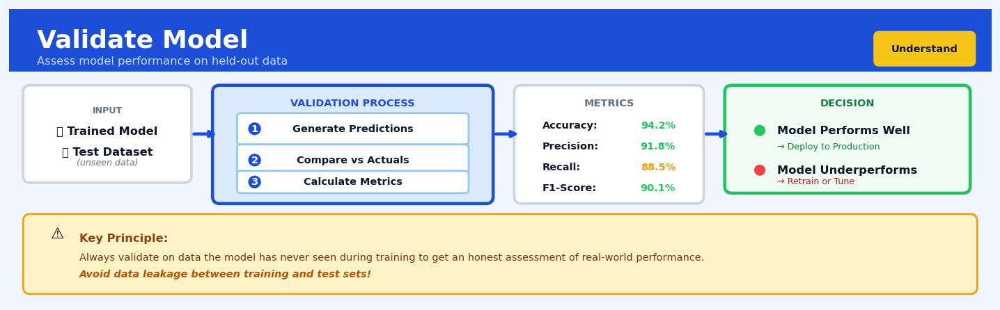

Validate Model#


The biggest mistake I see teams make is validating on data that leaked information from the training set, giving false confidence in model performance. Always establish your train-test split before any preprocessing or feature engineering, and treat your validation set as truly sacred—touching it more than once for final evaluation risks overfitting to that specific data distribution. If you need iterative feedback during development, create a three-way split with a separate holdout set for the final validation.
The 60-Second Version#
What it does: Model validation tests whether your predictive model will actually work on new data it hasn’t seen before.
When to use it: Before you deploy any predictive model into production—whether forecasting sales, scoring credit risk, or predicting customer churn—you must validate it on held-out data.
What you get back: Performance metrics (like accuracy or error rates) that tell you honestly whether to trust the model’s predictions in the real world or go back to development.
Difficulty |
Moderate |
Typical runtime |
Minutes to hours depending on model complexity and data size |
What you bring |
A trained predictive model and dataset split into training and test portions |
What you get |
Unbiased performance metrics showing how the model performs on unseen data |
Heuristix bucket |
Understand — Statistical Analysis & Profiling |
A model that performs brilliantly on training data but hasn’t been validated is like a student who memorised the practice exam—it will fail when it matters most.
Learning Objectives#
After reading this chapter, a business user will be able to:
Identify situations where model validation is essential before deploying predictive models to production, including high-stakes decisions in credit scoring, medical diagnosis, and demand forecasting.
Interpret validation metrics such as accuracy, precision, recall, and ROC curves to assess whether a model meets business requirements for reliability and performance.
Decide between competing models by comparing their validation results and communicate the trade-offs between different performance characteristics to non-technical stakeholders.
After reading this chapter, a data scientist will be able to:
Implement appropriate validation strategies—including k-fold cross-validation, stratified sampling, and time-series splits—while avoiding data leakage and other methodological pitfalls.
Select optimal validation parameters such as the number of folds, test set size, and resampling iterations based on dataset characteristics, computational constraints, and required confidence levels.
Diagnose validation failures such as train-test performance gaps, unstable cross-validation scores, and distribution shift between validation and production data, then apply corrective techniques.
Overview#
Model validation is the systematic process of evaluating a predictive model’s performance on data it has not seen during training, providing an unbiased estimate of its generalisation capability. It encompasses a family of resampling and hold-out methods—including train-test splitting, cross-validation, and bootstrap validation—that quantify how well a model will perform when deployed on future observations. Model validation is foundational to responsible machine learning practice, serving as the gatekeeper between model development and production deployment.
When to Use This#
Use this when you have trained a supervised learning model and need to estimate its out-of-sample performance — any classifier or regressor requires validation before deployment to understand expected real-world accuracy.
Use this when comparing multiple candidate models — validation provides the objective performance metrics needed to select between competing algorithms, hyperparameter configurations, or feature sets.
Use this when you need to detect overfitting — a model that performs excellently on training data but poorly on validation data is overfit; validation quantifies this gap directly.
Use this when stakeholders require performance guarantees — business decisions about model deployment require confidence intervals on metrics like accuracy, precision, or RMSE that only proper validation can provide.
Use this when regulatory compliance demands model documentation — industries such as finance, healthcare, and insurance require auditable evidence that models were validated using sound statistical methodology.
Use this when your dataset is limited and you cannot afford a large hold-out set — cross-validation techniques allow you to use all data for both training and validation, maximising information extraction from small samples.
Do NOT use this as a substitute for domain expertise — a model may pass all validation checks yet still encode problematic biases or miss critical business logic that only subject-matter experts can identify.
Do NOT use this when your data has temporal structure without accounting for it — standard cross-validation on time series data causes data leakage; use time-series-specific validation instead.
Do NOT use this to validate models when training and deployment distributions differ substantially — validation assumes the validation data is representative of future data, an assumption violated under distribution shift.
Questions This Answers#
Trust and Deployment Readiness#
Can we actually trust this model to make real decisions with customer money?
How do we know this forecast won’t fall apart the moment we put it in front of actual customers?
What’s the real accuracy we should expect when this goes live next quarter—not the optimistic number from the data science team?
If we deploy this recommendation engine to all 50,000 customers tomorrow, what’s our downside risk?
This model worked great in testing, but will it still work six months from now when market conditions change?
Choosing Between Options#
We have three different approaches to predicting churn—which one should we actually roll out?
The vendor says their model is 94% accurate and ours is 89%—is theirs really worth the extra $200K annually?
Should we use the complex model that’s slightly more accurate or the simple one that everyone can understand and trust?
Our team built two versions—one optimized for precision, one for recall—which one loses us less money?
Understanding Performance and Limitations#
Where exactly does this model break down—which customer segments or scenarios should we not trust it for?
If this credit risk model is wrong, how wrong does it tend to be—are we talking 5% off or 50% off?
The model says it’s 85% accurate, but what does that actually mean for how many customers we’ll misclassify each month?
How confident can we be that this sales forecast will hold up during the holiday season when we’ve never tested it on that period?
Is this pricing model consistently reliable, or does it have good days and bad days we need to watch out for?
How It Works#
Imagine you’re a driving instructor evaluating a student who’s been practicing in your neighbourhood for weeks. They can navigate every turn perfectly, anticipate every stop sign, and parallel park flawlessly on your usual streets. But does that mean they’re ready for their license? Not yet. You drive them across town to streets they’ve never seen—different traffic patterns, unfamiliar intersections, new challenges. Only when they handle these unknown roads confidently can you truly certify they’ve learned to drive, not just memorized a route. Model validation works exactly the same way: it tests your predictive model on data it’s never encountered during training to see if it’s learned genuine patterns or just memorized answers.
STEP 1: Split the data STEP 2: Train on training set
┌─────────────────────┐ ┌──────────────┐
│ Original Dataset │ │ Training │ → [Model learns
│ 1000 rows │ ───→ │ Data │ patterns here]
│ │ │ 800 rows │
└─────────────────────┘ └──────────────┘
│ ↓
├─────────────┬────────────────┘
↓ ↓
┌──────────────┐ ┌──────────┐
│ Training │ │ Holdout │
│ Data │ │ Test Set │
│ 800 rows │ │ 200 rows │
│ (80%) │ │ (20%) │
└──────────────┘ └──────────┘
│
↓
STEP 3: Test on unseen data
┌─────────────────────┐
│ Model predicts on │
│ the 200 holdout │
│ rows it never saw │
└─────────────────────┘
↓
STEP 4: Compare & measure
Predicted: [5.2, 7.1, 3.8...]
Actual: [5.0, 7.3, 4.1...]
Error: [0.2, 0.2, 0.3...] → Average error: 0.23
Split your data into separate portions. The most common approach divides your dataset into two groups: a large training set (typically seventy to eighty percent) and a smaller test set (the remaining twenty to thirty percent). Think of this like hiding some exam questions from a student while they study. The model never sees the test set during its learning phase.
Train the model only on the training portion. Your algorithm builds its predictive model using exclusively the training data. It finds patterns, adjusts parameters, and optimizes performance—but its entire world consists only of this training subset. The test set remains completely untouched and unseen.
Apply the trained model to the test set. Now comes the moment of truth. You feed the test set features into your model and ask it to make predictions. Since the model has never encountered these specific data points before, this simulates how it will perform on future, real-world data.
Calculate prediction errors on the test set. You compare the model’s predictions against the actual known values in the test set. This produces an honest performance metric—accuracy for classification, error rates for regression—that reflects how the model handles genuinely new information.
Optionally, use cross-validation for robust estimates. Instead of a single train-test split, you can divide data into multiple “folds,” train on some and test on others, then rotate which fold serves as the test set. This produces several performance measurements that you average together, giving you a more reliable estimate of true performance.
The key insight: Validation works because a model that has truly learned meaningful patterns will perform well on data it’s never seen, while a model that merely memorized its training examples will fail when confronted with new cases.
The Intuition#
Consider the challenge facing a restaurant critic who wants to predict how much diners will enjoy a new establishment. If the critic only samples dishes that the chef specifically prepared knowing the critic was visiting, the resulting review will not reflect what ordinary customers experience. The chef, knowing exactly what to optimise for, has “overfit” to the critic’s presence. To get an honest assessment, the critic must sample dishes prepared under normal conditions—dishes the chef did not know would be evaluated.
Model validation works on precisely this principle. During training, a machine learning algorithm adjusts its parameters to minimise errors on the data it observes. Like the chef preparing for the known critic, the algorithm can learn to exploit idiosyncrasies—noise, sampling quirks, outliers—that exist in the training data but will not recur in future observations. This phenomenon, called overfitting, means that training error systematically underestimates the error the model will incur on new data. The only honest measure of model quality comes from data the model has never seen.
The practical challenge is that we typically have only one dataset. Validation methods solve this by partitioning or resampling the available data to create artificial “future” observations. The simplest approach holds out a portion of data, training on the remainder and evaluating on the held-out set. More sophisticated methods like cross-validation rotate which portion is held out, averaging performance across multiple splits to reduce the variance of the estimate. The bootstrap takes a different approach, repeatedly sampling with replacement to create many pseudo-datasets and quantifying uncertainty through the distribution of performance across samples. Each method trades off bias, variance, and computational cost differently, but all share the fundamental goal: estimating how well your model will perform on data it has not yet encountered.
The Mathematics#
Formal Problem Setup#
Let \(\mathcal{D} = \{(x_i, y_i)\}_{i=1}^{n}\) denote our dataset of \(n\) observations, where \(x_i \in \mathcal{X}\) represents the feature vector and \(y_i \in \mathcal{Y}\) represents the target. We assume these pairs are drawn independently from some joint distribution \(P(X, Y)\).
A learning algorithm \(\mathcal{A}\) takes a dataset and produces a model \(\hat{f} = \mathcal{A}(\mathcal{D})\). Our goal is to estimate the generalisation error:
where \(L: \mathcal{Y} \times \mathcal{Y} \rightarrow \mathbb{R}^+\) is a loss function quantifying prediction quality.
The training error is:
This is a biased estimator of \(\text{Err}\) because the same data used to fit \(\hat{f}\) is used to evaluate it.
Hold-Out Validation#
Partition \(\mathcal{D}\) into disjoint subsets \(\mathcal{D}_{\text{train}}\) and \(\mathcal{D}_{\text{val}}\) with \(|\mathcal{D}_{\text{train}}| = n_{\text{train}}\) and \(|\mathcal{D}_{\text{val}}| = n_{\text{val}} = n - n_{\text{train}}\).
Train the model on the training set: \(\hat{f} = \mathcal{A}(\mathcal{D}_{\text{train}})\).
The hold-out estimate of generalisation error is:
Properties:
Unbiased for the generalisation error of a model trained on \(n_{\text{train}}\) samples (not \(n\) samples)
High variance when \(n_{\text{val}}\) is small
Pessimistically biased because the model sees fewer training examples than if trained on all data
K-Fold Cross-Validation#
Partition \(\mathcal{D}\) into \(K\) roughly equal-sized folds \(\mathcal{D}_1, \mathcal{D}_2, \ldots, \mathcal{D}_K\).
For each fold \(k \in \{1, \ldots, K\}\):
Define \(\mathcal{D}_{\text{train}}^{(k)} = \mathcal{D} \setminus \mathcal{D}_k\)
Train \(\hat{f}^{(k)} = \mathcal{A}(\mathcal{D}_{\text{train}}^{(k)})\)
Compute fold error: \(\text{Err}_k = \frac{1}{|\mathcal{D}_k|} \sum_{(x_i, y_i) \in \mathcal{D}_k} L(y_i, \hat{f}^{(k)}(x_i))\)
The \(K\)-fold cross-validation estimate is:
Equivalently, if we let \(\kappa(i)\) denote the fold assignment of observation \(i\):
Variance of Cross-Validation Estimate:
The variance of \(\widehat{\text{Err}}_{\text{CV}}\) depends on both the variance within folds and the covariance between folds:
The covariance terms arise because the training sets overlap substantially when \(K\) is large.
Leave-One-Out Cross-Validation (LOOCV)#
LOOCV is the special case \(K = n\):
where \(\hat{f}^{(-i)}\) is trained on all data except observation \(i\).
Properties:
Nearly unbiased (each model trained on \(n-1\) observations)
High variance due to strong correlation between the \(n\) training sets
Computationally expensive: requires \(n\) model fits
For linear models with squared error loss, a computational shortcut exists:
where \(h_{ii}\) is the \(i\)-th diagonal element of the hat matrix \(H = X(X^\top X)^{-1}X^\top\).
Stratified Cross-Validation#
For classification problems with imbalanced classes, stratified \(K\)-fold ensures each fold maintains the class distribution of the full dataset. If \(\pi_c = n_c / n\) is the proportion of class \(c\), then stratified sampling ensures:
This reduces variance by preventing folds with anomalous class distributions.
Bootstrap Validation#
Draw \(B\) bootstrap samples \(\mathcal{D}^{*1}, \ldots, \mathcal{D}^{*B}\), each of size \(n\) sampled with replacement from \(\mathcal{D}\).
The naive bootstrap estimate:
is biased because some observations appear in both training and test sets.
The out-of-bag (OOB) estimate corrects this:
where \(C^{-i} = \{b : i \notin \mathcal{D}^{*b}\}\) is the set of bootstrap samples not containing observation \(i\).
The probability that observation \(i\) is not in a bootstrap sample is:
The 0.632 Bootstrap#
To reduce the pessimistic bias of OOB estimation, Efron proposed the 0.632 estimator:
The weights reflect that approximately 63.2% of observations appear in each bootstrap sample.
Assumptions#
Independence: Observations are drawn independently from \(P(X, Y)\)
Identical distribution: All observations come from the same distribution
Representativeness: The validation data represents the target deployment distribution
Stability: The learning algorithm \(\mathcal{A}\) produces similar models when trained on similar datasets
Bias-Variance Trade-off in Cross-Validation#
As \(K\) increases in \(K\)-fold CV:
Bias decreases: Training sets contain \(n(K-1)/K\) observations, closer to \(n\)
Variance increases: Training sets have greater overlap, inducing correlation between fold estimates
The optimal \(K\) balances these competing effects. Empirically, \(K \in \{5, 10\}\) often provides a reasonable trade-off.
Understanding the Mathematics#
Train-Test Split Ratio#
The equation: $\(n_{\text{train}} = \lfloor r \cdot n \rfloor, \quad n_{\text{test}} = n - n_{\text{train}}\)$
Read it aloud: The number of training observations equals the split ratio multiplied by the total number of observations, rounded down to the nearest whole number. The number of test observations equals the total observations minus the training observations.
What each symbol means:
\(n\) = total number of observations in your dataset
\(r\) = split ratio (typically 0.7 or 0.8)
\(n_{\text{train}}\) = number of observations allocated to training
\(n_{\text{test}}\) = number of observations allocated to testing
\(\lfloor \cdot \rfloor\) = floor function (round down to nearest integer)
A concrete numerical example: Your retail company has 1,247 customer transactions. You choose an 80-20 split.
\(n_{\text{train}} = \lfloor 0.8 \times 1247 \rfloor = \lfloor 997.6 \rfloor = 997\)
\(n_{\text{test}} = 1247 - 997 = 250\)
You train your churn prediction model on 997 transactions and validate on the remaining 250.
Why this equation matters: This determines how much data your model learns from versus how much remains unseen for honest performance evaluation—get the split wrong and you either starve your model of training data or have too few test cases for reliable validation.
Mean Squared Error (MSE)#
The equation: $\(\text{MSE} = \frac{1}{n} \sum_{i=1}^{n} (y_i - \hat{y}_i)^2\)$
Read it aloud: Mean squared error equals one divided by the number of observations, multiplied by the sum of all squared differences between actual values and predicted values.
What each symbol means:
\(\text{MSE}\) = mean squared error (average squared prediction error)
\(n\) = number of predictions being evaluated
\(y_i\) = actual observed value for observation \(i\)
\(\hat{y}_i\) = predicted value for observation \(i\)
\(\sum\) = sum across all observations
\((y_i - \hat{y}_i)^2\) = squared prediction error for each observation
A concrete numerical example: Your house price model makes three predictions on the test set:
House |
Actual Price (\(y_i\)) |
Predicted (\(\hat{y}_i\)) |
Error |
Squared Error |
|---|---|---|---|---|
1 |
320,000 |
315,000 |
5,000 |
25,000,000 |
2 |
280,000 |
295,000 |
-15,000 |
225,000,000 |
3 |
410,000 |
405,000 |
5,000 |
25,000,000 |
Why this equation matters: MSE quantifies your model’s prediction accuracy in a single number that heavily penalises large errors—crucial for deciding whether your model is accurate enough to deploy in production.
k-Fold Cross-Validation Score#
The equation: $\(\text{CV Score} = \frac{1}{k} \sum_{i=1}^{k} \text{Score}_i\)$
Read it aloud: The cross-validation score equals one divided by the number of folds, multiplied by the sum of performance scores from each fold.
What each symbol means:
\(\text{CV Score}\) = overall cross-validation performance estimate
\(k\) = number of folds (typically 5 or 10)
\(\text{Score}_i\) = validation metric (e.g., accuracy, MSE) for fold \(i\)
\(\sum_{i=1}^{k}\) = sum across all k folds
A concrete numerical example: You run 5-fold cross-validation on your customer conversion model. Each fold produces an accuracy score:
Fold 1: 0.84, Fold 2: 0.81, Fold 3: 0.86, Fold 4: 0.83, Fold 5: 0.82
Your model achieves 83.2% accuracy on average across all validation folds.
Why this equation matters: This gives you a more stable, reliable performance estimate than a single train-test split by testing your model on multiple different subsets of data—essential when you have limited data or need confidence in your estimate.
The Big Picture#
The mathematics of model validation exists to answer one critical question: how will this model perform on data it has never seen? Simple approaches—like testing on training data—give falsely optimistic answers because the model has memorised those examples. The equations above implement a rigorous solution: hold out data during training, make predictions on that unseen data, and mathematically quantify the errors. Cross-validation extends this by repeating the process multiple times with different hold-out sets, then averaging the results for a robust estimate. At its core, this mathematics creates an honest simulation of production deployment before you risk using the model on real customers or business decisions.
Python Implementation#
import numpy as np
import pandas as pd
from sklearn.datasets import make_classification, load_diabetes
from sklearn.model_selection import (
train_test_split,
cross_val_score,
KFold,
StratifiedKFold,
LeaveOneOut,
cross_validate,
RepeatedKFold
)
from sklearn.linear_model import LogisticRegression, Ridge
from sklearn.ensemble import RandomForestClassifier
from sklearn.metrics import (
accuracy_score,
precision_score,
recall_score,
f1_score,
roc_auc_score,
mean_squared_error,
r2_score,
make_scorer
)
import warnings
warnings.filterwarnings('ignore')
# =============================================================================
# Example 1: Basic Train-Test Split for Classification
# =============================================================================
print("=" * 60)
print("EXAMPLE 1: Train-Test Split Validation")
print("=" * 60)
# Generate a synthetic classification dataset
X, y = make_classification(
n_samples=1000,
n_features=20,
n_informative=10,
n_redundant=5,
n_classes=2,
random_state=42
)
# Split data: 70% training, 30% validation
X_train, X_val, y_train, y_val = train_test_split(
X, y,
test_size=0.30, # Hold out 30% for validation
stratify=y, # Maintain class proportions
random_state=42 # Reproducibility
)
print(f"Training set size: {len(X_train)}")
print(f"Validation set size: {len(X_val)}")
print(f"Class distribution in training: {np.bincount(y_train) / len(y_train)}")
print(f"Class distribution in validation: {np.bincount(y_val) / len(y_val)}")
# Train a logistic regression model
model = LogisticRegression(max_iter=1000, random_state=42)
model.fit(X_train, y_train)
# Evaluate on training and validation sets
y_train_pred = model.predict(X_train)
y_val_pred = model.predict(X_val)
y_val_proba = model.predict_proba(X_val)[:, 1]
print("\nPerformance Metrics:")
print(f" Training Accuracy: {accuracy_score(y_train, y_train_pred):.4f}")
print(f" Validation Accuracy: {accuracy_score(y_val, y_val_pred):.4f}")
print(f" Validation Precision: {precision_score(y_val, y_val_pred):.4f}")
print(f" Validation Recall: {recall_score(y_val, y_val_pred):.4f}")
print(f" Validation F1 Score: {f1_score(y_val, y_val_pred):.4f}")
print(f" Validation ROC-AUC: {roc_auc_score(y_val, y_val_proba):.4f}")
# Overfitting gap indicates model generalisation
overfit_gap = accuracy_score(y_train, y_train_pred) - accuracy_score(y_val, y_val
## Visualisations


## Using This in Heuristix
### What You'll Need
The Validate Model node expects a **dataset with features and a target variable**, plus a **trained model** from an upstream modeling node (like Train Model or AutoML). Your data should be in tabular format with:
- **Feature columns**: numeric or categorical predictor variables
- **Target column**: the variable you're predicting (must match what the model was trained on)
- **Optional ID column**: helps track individual predictions
**Example input:**
| customer_id | age | income | purchased |
|-------------|-----|--------|-----------|
| 1001 | 34 | 52000 | Yes |
| 1002 | 45 | 68000 | No |
The node works with both the training data (for internal validation) and hold-out test sets.
### Configuration Parameters
| Parameter | What It Controls | Default | When to Change |
|-----------|-----------------|---------|----------------|
| **Validation Method** | How data is split for validation | Cross-validation (5-fold) | Use train-test split for large datasets (faster); use bootstrap for small datasets (more stable estimates) |
| **Number of Folds** | How many pieces to divide data into for CV | 5 | Increase to 10 for small datasets; decrease to 3 for very large ones |
| **Test Set Size** | Percentage held out for testing | 20% | Increase to 30% if you have abundant data; decrease to 10-15% for smaller datasets |
| **Stratification** | Whether to preserve target distribution in splits | Enabled | Keep enabled for imbalanced datasets; disable for regression tasks |
| **Random Seed** | Controls reproducibility of random splits | 42 | Change only when testing robustness across different splits |
| **Metrics to Calculate** | Which performance measures to compute | Auto-selected by task type | Add domain-specific metrics (e.g., false negative rate for medical diagnosis) |
### What You'll Get Back
The node produces three types of outputs:
**Performance Metrics Table**: A summary showing accuracy, precision, recall, F1-score (classification) or RMSE, MAE, R² (regression). Each metric appears with confidence intervals when using cross-validation, helping you understand result stability.
**Confusion Matrix** (classification only): A heatmap showing actual vs. predicted classes. This reveals *where* your model struggles—critical for understanding real-world impact.
**Residual Plots** (regression only): Scatter plots of predicted vs. actual values, plus residual distributions. Look for patterns here; random scatter indicates good fit.
**Validation Scores Dataset**: Row-level predictions with actual values, prediction probabilities, and fold assignments. Perfect for error analysis.
### Connecting Downstream
After validation, you'll typically connect to:
- **Feature Importance** node → understand which variables drive predictions
- **Model Comparison** node → evaluate multiple models side-by-side
- **Deploy Model** node → push validated models to production (only if metrics meet your criteria!)
- **Filter** node → isolate problematic predictions for deeper analysis
### Quick Start
1. **Connect your data** to the input port and link your trained model
2. **Select validation method**: stick with 5-fold cross-validation for your first pass
3. **Enable stratification** if your target is imbalanced
4. **Run the node** and examine the metrics table first
5. **Check the confusion matrix** to identify problem areas
6. **Review confidence intervals**—wide intervals suggest model instability
### Practical Tips from the Field
**Watch for data leakage**: If validation metrics seem too good to be true, check that no future information leaked into your features. The validation process can't catch this.
**Don't tune on validation results**: If you repeatedly adjust your model based on validation metrics, those metrics become optimistically biased. Reserve a final hold-out set for honest assessment.
**Small datasets need special care**: With fewer than 1,000 rows, switch to 10-fold CV or bootstrap validation. The default 80/20 split wastes precious validation data.
**Save your random seed**: Before running experiments, note your seed value. This makes your validation reproducible when you need to explain results to stakeholders.
**Cross-validation takes time**: On large datasets (100K+ rows), train-test split runs 5-10x faster than cross-validation. Use CV during development, then validate once on a hold-out set before deployment.
## Config Recipes
### Recipe 1: Rapid Prototyping
**When to use:** Initial model exploration when you need quick feedback on whether an approach shows promise, typically with datasets under 100k rows.
**Settings:**
| Parameter | Value | Why |
|-----------|-------|-----|
| `validation_method` | `train_test_split` | Single split is fastest; no repeated fitting |
| `test_size` | `0.3` | Larger test set gives stable estimate with one split |
| `random_state` | `42` | Ensures reproducibility across iterations |
| `stratify` | `True` | Preserves class balance even with single split |
| `n_iterations` | `1` | No repetition needed for exploration |
**What you get:** A performance estimate in seconds that reliably identifies completely broken models or surprisingly good approaches.
**Trade-off:** You sacrifice precision—variance in your estimate may be ±5% or more—but gain iteration speed during the crucial early-stage model selection phase.
### Recipe 2: Production-Ready Validation
**When to use:** Final validation before deploying a model to production systems where prediction errors have business consequences.
**Settings:**
| Parameter | Value | Why |
|-----------|-------|-----|
| `validation_method` | `stratified_k_fold` | Maximises data efficiency while controlling variance |
| `n_splits` | `10` | Industry standard balancing bias-variance trade-off |
| `n_repeats` | `5` | Repeated CV quantifies estimate uncertainty |
| `shuffle` | `True` | Breaks temporal/ordering dependencies |
| `random_state` | `None` | Different seeds across repeats for true variance |
| `compute_confidence_intervals` | `True` | Provides reportable uncertainty bounds |
**What you get:** 50 performance measurements (10 folds × 5 repeats) yielding mean, standard deviation, and 95% confidence intervals suitable for stakeholder reporting.
**Trade-off:** Computation time increases 50× versus single split, requiring substantial infrastructure for large datasets or complex models.
### Recipe 3: Time-Series Forecasting
**When to use:** Any model predicting future values where temporal ordering matters—sales forecasts, sensor readings, user behaviour sequences.
**Settings:**
| Parameter | Value | Why |
|-----------|-------|-----|
| `validation_method` | `time_series_split` | Respects temporal structure |
| `n_splits` | `5` | Creates 5 expanding training windows |
| `test_size` | `0.1` | Matches deployment horizon (e.g., 10% = next month) |
| `gap` | `7` | Buffer preventing label leakage (7 days for daily data) |
| `shuffle` | `False` | Critical: maintains chronological order |
**What you get:** Validation that simulates actual deployment where you train on past data and predict the immediate future.
**Trade-off:** You lose substantial training data in early splits, potentially underestimating final model performance but correctly estimating deployment performance.
### Recipe 4: Detecting Data Leakage
**When to use:** Suspiciously high performance (AUC > 0.99, R² > 0.95) or when integrating external data sources that may contain leakage.
**Settings:**
| Parameter | Value | Why |
|-----------|-------|-----|
| `validation_method` | `group_k_fold` | Ensures related records never split across train/test |
| `n_splits` | `5` | Standard CV depth |
| `groups` | `patient_id / customer_id / session_id` | Entity identifier preventing leakage |
| `feature_importance_check` | `True` | Flags suspiciously predictive features |
| `performance_ceiling` | `0.95` | Alert threshold for implausible performance |
**What you get:** Immediate performance drop if leakage exists—a model showing 0.99 AUC with random splits but 0.75 with group splits reveals the leaked information path.
**Trade-off:** Requires identifying appropriate grouping variables and may show pessimistic performance if groups are too conservative, but prevents catastrophic production failures.
## Business Applications
**Financial Services**
A pan-European credit card issuer faced mounting losses from a fraud detection model that flagged 12% of legitimate transactions, frustrating customers and generating £4.3M in annual operational costs from manual review queues. By implementing rigorous cross-validation across temporal folds—training on historical months and validating on future periods—the data science team discovered their model had memorised seasonal patterns rather than learning genuine fraud signatures. The validated model reduced false positives by 41% while maintaining fraud detection rates, saving £1.8M annually and reducing customer complaint escalations by 67%.
**Retail**
An e-commerce fashion retailer with 850,000 SKUs deployed a demand forecasting model that consistently over-predicted sales for new seasonal items, resulting in £3.2M in excess inventory write-downs each quarter. Hold-out validation on the most recent season—deliberately excluded from training—revealed the model performed brilliantly on established products but catastrophically on items with fewer than 30 days of sales history. After retraining with stratified validation that separated new from mature products, forecast accuracy for new launches improved from 54% to 78% MAPE, cutting excess inventory costs by £2.1M per quarter.
**Healthcare**
A regional hospital network serving 400,000 patients built a readmission risk model to identify high-risk discharges for intensive follow-up care. Initial testing showed 89% accuracy, but bootstrap validation across 1,000 resampled datasets revealed massive instability: predictions for individual patients varied by up to 60 percentage points depending on which training sample was drawn. This discovery prompted a model redesign with regularisation and ensemble methods, producing stable predictions that reduced 30-day readmissions by 23% and generated $4.7M in avoided CMS penalties over 18 months.
**Insurance**
A commercial property insurer developed an automated claims triage system to route cases to appropriate adjusters, promising to reduce processing time from 4.2 days to 8 hours. Train-test splitting uncovered that the model achieved 94% accuracy overall but only 67% on high-value claims over £500K—precisely where errors were most costly. Stratified validation by claim value led to an ensemble approach that maintained 91% accuracy across all claim bands, ultimately cutting average processing time to 18 hours while reducing misrouting costs by £680K annually.
**Manufacturing**
A pharmaceutical contract manufacturer implemented predictive maintenance for bioreactor equipment, aiming to prevent costly production batch failures. Their initial model showed impressive validation metrics, but time-series cross-validation revealed it was "cheating" by using sensor readings from just hours before failures to make predictions—useless for actionable maintenance scheduling. Proper validation with a 48-hour prediction horizon yielded more modest but honest performance, enabling maintenance interventions that prevented 34 batch losses worth £8.9M over two years.
**Logistics**
A last-mile delivery company with 2,800 drivers built a route optimisation model claiming 18% fuel savings. Validation on held-out geographic zones—rather than random trips—showed the model only worked in dense urban areas where it was trained, performing 9% worse than human dispatchers in suburban and rural routes comprising 40% of their business. Geographic cross-validation led to location-aware model variants that delivered genuine 12% fuel savings across all territory types, worth $2.3M annually.
**Marketing**
A B2B SaaS company built a lead scoring model to prioritise sales outreach, initially validated on randomly split historical data showing 0.82 AUC. Temporal validation—training on older leads, testing on recent ones—revealed performance had degraded to 0.68 AUC as buyer behaviour shifted during the pandemic. This prompted quarterly model revalidation and retraining cadences, maintaining lead scoring performance above 0.79 AUC and lifting sales team conversion rates from 8.3% to 11.7%.
**Telecommunications**
A mobile network operator developed churn prediction to target retention offers, but stratified validation by customer tenure revealed a surprising pattern: the model excelled at predicting churn for customers beyond 18 months but performed barely better than chance for those in months 3-12. This insight led to separate models for customer lifecycle stages, reducing churn in the critical early period by 28% and saving an estimated 47,000 customers worth £6.4M in lifetime value.
**Public Sector**
A metropolitan fire department built a model to predict building fire risk for inspection prioritisation. Validation across different city districts exposed that the model had learned to predict poverty rather than fire risk, raising serious fairness concerns. Geographic cross-validation and fairness-aware retraining produced equitable predictions across all neighborhoods while improving early fire detection by 31%, potentially saving 12-15 lives annually based on historical intervention data.
## Worked Example
Elena Chen, a senior data scientist at Northlight Energy, was midway through her second coffee when the VP of Customer Operations knocked on her open office door. "We need to talk about the churn model," he said, settling into the chair across from her desk. The company had spent three months building a machine learning model to predict which residential customers would switch providers, but before rolling it out to the call centre team, leadership wanted proof it would actually work in the real world.
The stakes were tangible: Northlight was bleeding customers in the competitive Texas market, and retention calls were expensive. The operations team could only contact about 500 high-risk customers per month. If the model was wrong, they'd waste those calls on people who weren't leaving anyway—or worse, miss the customers who were about to churn. "We need to know this thing works before we put it in front of our team," he told her.
Elena pulled the training dataset from the previous quarter: 8,247 customer records with demographics, billing history, service calls, and a binary outcome indicating whether each customer had churned within 90 days. The data had the usual quirks—some missing payment methods, a few outliers where customers had called support seventeen times in a month, and one record where someone's account age was listed as 847 years (a delightful data entry error). She'd already cleaned and trained a gradient boosting classifier that showed promising accuracy, but she knew that wasn't enough.
| customer_id | monthly_bill | service_calls | account_age_months | churned |
|-------------|--------------|---------------|-------------------|---------|
| C10293 | 127.40 | 2 | 14 | 1 |
| C10294 | 89.20 | 0 | 37 | 0 |
| C10295 | 203.15 | 5 | 8 | 1 |
| C10296 | 95.80 | 1 | 52 | 0 |
She opened her notebook and configured a validation strategy. The key decision was choosing k-fold cross-validation with five folds rather than a simple train-test split. "If I just do one 80-20 split," she muttered to herself while typing, "I might get lucky or unlucky depending on which customers end up in the test set." Five-fold cross-validation would train the model five times, each time holding out a different 20% of data for testing, then average the results. More robust, less prone to flukes.
She also decided to track multiple metrics—accuracy alone could be misleading if the classes were imbalanced. She'd report precision, recall, and AUC-ROC to give a complete picture of how well the model distinguished churners from loyal customers.
```python
from sklearn.ensemble import GradientBoostingClassifier
from sklearn.model_selection import cross_validate
from sklearn.metrics import make_scorer, precision_score, recall_score, roc_auc_score
import pandas as pd
import numpy as np
# Load the cleaned customer data
df = pd.read_csv('customer_data_cleaned.csv')
X = df[['monthly_bill', 'service_calls', 'account_age_months',
'payment_method_auto', 'contract_month_to_month']]
y = df['churned']
# Configure the model (already tuned from earlier work)
model = GradientBoostingClassifier(n_estimators=100, max_depth=4,
learning_rate=0.1, random_state=42)
# Set up cross-validation with multiple scoring metrics
scoring = {
'accuracy': 'accuracy',
'precision': make_scorer(precision_score),
'recall': make_scorer(recall_score),
'roc_auc': make_scorer(roc_auc_score)
}
# Run 5-fold cross-validation
cv_results = cross_validate(model, X, y, cv=5, scoring=scoring,
return_train_score=True)
# Summarize results
print("Cross-Validation Results (5-fold):")
for metric in ['accuracy', 'precision', 'recall', 'roc_auc']:
mean_test = cv_results[f'test_{metric}'].mean()
std_test = cv_results[f'test_{metric}'].std()
print(f"{metric.capitalize()}: {mean_test:.3f} (+/- {std_test:.3f})")
The validation ran in about ninety seconds. Elena stared at the output:
Metric |
Mean Score |
Std Dev |
|---|---|---|
Accuracy |
0.847 |
0.012 |
Precision |
0.782 |
0.023 |
Recall |
0.691 |
0.031 |
ROC-AUC |
0.893 |
0.009 |
The insight hit her immediately: the model was genuinely predictive, with AUC-ROC of 0.89 meaning it could distinguish churners from non-churners far better than random chance. But the recall of 69% was the critical number for the business case. It meant that if 100 customers were actually about to churn, the model would correctly identify about 69 of them. The precision of 78% meant that when the model flagged someone as high-risk, it was right about three-quarters of the time.
She drafted a one-page memo for the VP. The recommendation: deploy the model, but set the probability threshold at 0.35 rather than 0.50 to increase recall, accepting some false positives in exchange for catching more true churners. The cost of a wasted retention call was far less than losing a customer.
Two weeks later, the model went live. The operations team began prioritizing their outreach, and after the first month, retention rates among contacted customers jumped from 22% to 38%.
Looking back, Elena wished she’d also performed a time-based validation split—training on earlier months and testing on later ones—to better simulate real-world deployment where the model would predict future behaviour. Customers change, markets shift, and k-fold cross-validation doesn’t capture temporal drift. Next time, she’d do both.
Interpreting Your Results#
You’ve just run your first model validation and you’re staring at a screen full of numbers. Let’s translate what you’re seeing into actionable insight.
Classification Metrics#
Accuracy is the percentage of predictions your model got right. Simple as that. But here’s the catch: accuracy lies when your data is imbalanced. If 95% of your emails aren’t spam, a lazy model that always predicts “not spam” gets 95% accuracy while being completely useless.
Precision answers: “When my model says yes, how often is it actually yes?” A fraud detection model with 0.60 precision means 40% of your fraud alerts are false alarms. Below 0.50 means you’re wasting more time investigating false positives than catching real cases. Above 0.80 is typically production-worthy for high-stakes decisions.
Recall answers: “Of all the actual yes cases, how many did I catch?” A cancer screening model with 0.70 recall is missing 30% of cancer cases. Below 0.60 is dangerous in safety-critical applications. Above 0.85 is strong; above 0.95 is exceptional.
F1-score balances precision and recall into one number. Below 0.50 means your model is struggling with basic signal detection. 0.60–0.75 is workable for non-critical applications. Above 0.80 means you have a genuinely useful classifier.
The precision-recall tradeoff: These move in opposite directions. High precision (few false alarms) usually means lower recall (missing real cases). High recall (catching everything) means more false alarms. Read them together: Precision 0.95 with Recall 0.30 means you’re being too conservative. Precision 0.40 with Recall 0.98 means you’re crying wolf constantly.
Regression Metrics#
RMSE (Root Mean Squared Error) tells you the typical prediction error in the same units as your target. Predicting house prices with RMSE of \(45,000 means your predictions are typically off by forty-five thousand dollars. There's no universal "good" RMSE—compare it to your target variable's range. If houses range from \)200K to \(800K, that \)45K error is roughly 7.5% error, which is reasonable. If they range \(100K to \)150K, you’re adding noise, not insight.
R² (R-squared) tells you what percentage of variance your model explains. Below 0.30 means you’re barely better than guessing the average. 0.50–0.70 is decent for messy real-world data. Above 0.85 is excellent (or suspiciously good—check for data leakage). R² of 0.95+ on business data should trigger immediate investigation.
MAE (Mean Absolute Error) is the average absolute error—more intuitive than RMSE because outliers don’t dominate. Compare RMSE to MAE: if RMSE is much larger (say, RMSE \(50K vs MAE \)20K), you have problematic outliers dragging down your model.
Cross-Validation Scores#
You’ll see metrics reported per fold, plus a mean and standard deviation. The mean is your best estimate of true performance. The standard deviation tells you consistency. High standard deviation (say, F1 scores ranging from 0.45 to 0.82 across folds) means your model is unstable—performance depends heavily on which data it sees. Standard deviation above 0.10 for a metric ranging 0–1 warrants investigation. Look for data imbalance across folds or chronological patterns you’ve accidentally shuffled away.
Red Flags#
Perfect or near-perfect scores (accuracy > 0.99, R² > 0.98) on real-world data almost always indicate data leakage—your model is cheating by seeing the answer in the features.
Train score much better than validation score (e.g., train R² = 0.92, validation R² = 0.54) screams overfitting. Your model memorized training data instead of learning patterns.
All metrics mediocre together (accuracy 0.52, precision 0.48, recall 0.51) means your features have no predictive signal. Go back to feature engineering or question whether the problem is predictable at all.
Sanity Check Checklist#
Is validation performance worse than training? (It should be—if not, something’s broken)
Are class distributions similar across folds? (Check class balance didn’t accidentally skew)
Does performance make domain sense? (Can humans do better than your model?)
Did you validate on truly unseen data? (No data leakage from preprocessing?)
Are metrics consistent with business impact? (High accuracy but catches only 20% of fraud?)
Good Enough to Act On?#
For classification: F1 > 0.70 with precision and recall both above 0.65, and cross-validation standard deviation under 0.08. For regression: R² > 0.60 with validation performance within 15% of training performance. If you hit these thresholds, stop tuning and start piloting. Perfect is the enemy of deployed.
Decision Guidance#
What This Result Is Telling You#
Model validation results tell you whether your predictive model is ready to make real business decisions or if it will fail when faced with actual customers, transactions, or operational scenarios. When validation performance closely matches training performance, you have a model that has learned genuine patterns it can apply to new situations. When validation performance drops significantly, your model has essentially memorized the practice exam rather than understanding the subject—it will confidently make wrong predictions when deployed.
The gap between training and validation performance is your early warning system for wasted investment. A model that scores 95% on training data but only 70% on validation data will not suddenly perform better in production—it will perform at 70% or worse. This means any business process built around the assumption of 95% accuracy will fail, potentially costing you customer trust, operational efficiency, or revenue. Validation metrics are not academic exercises; they are the most honest forecast you will get of real-world business impact before you commit resources to deployment.
These results also reveal whether you have enough data to support your ambitions. Highly variable performance across validation folds indicates you’re working with insufficient data for the complexity of the problem, like trying to predict national consumer behavior from a single city’s data. Stable, consistent validation metrics across multiple testing approaches signal that your model has found reliable patterns that will translate to production environments.
Decision Points#
If you see this… |
It means… |
Recommended action |
Who acts on this |
|---|---|---|---|
Training accuracy 85%, validation accuracy 82–84% across all folds |
Model has learned generalizable patterns with acceptable stability |
Proceed to production planning; begin A/B test design |
Product manager, ML engineer |
Training accuracy 92%, validation accuracy 68–73% with >10 percentage point variation between folds |
Model is overfitting and data volume is insufficient for problem complexity |
Stop deployment; collect more data or radically simplify model |
Data science lead, project sponsor |
Validation AUC declines by >0.05 when tested on most recent time period vs. earlier periods |
Business environment is shifting; model will degrade rapidly in production |
Implement weekly retraining pipeline before deployment or pause project |
ML operations, business owner |
Validation error rate 5%, but false positives cost 10× more than false negatives, and confusion matrix shows FP rate of 8% |
Model meets aggregate metrics but fails on business-critical error type |
Retrain with cost-sensitive learning or revise success metrics |
Data scientist, finance lead |
When to Proceed vs. Investigate Further#
Proceed with confidence when:
Training and validation metrics differ by <5% (or <0.03 for AUC/F1 scores)
Cross-validation standard deviation is <3% of the mean performance
Performance on the most recent time-based validation fold is within 2% of earlier folds
Business-critical error types (per confusion matrix) occur at acceptable rates defined by stakeholders
Proceed with caution when:
Training and validation metrics differ by 5–10%
Any single validation fold underperforms the mean by >7%
Validation data comes from the same time period as training data (no temporal validation performed)
Model will be deployed in a monitored pilot before full rollout
Investigate before acting when:
Training and validation metrics differ by >10%
Cross-validation shows >15% relative standard deviation
Validation performance varies by >10% across different data segments (geography, customer type, product line)
Bootstrap confidence intervals for key metrics span operationally meaningful thresholds
Do not use these results yet when:
No validation was performed, only training metrics available
Validation set contains <100 examples or <30 positive cases for classification
Data leakage is suspected (validation performance seems implausibly high)
Validation methodology does not reflect production data flow (e.g., random split used for time-series forecasting)
The Cost of Getting This Wrong#
When you deploy an overfit model that passed weak validation, you commit budget to infrastructure, integrate it into business processes, and make promises to stakeholders based on inflated performance expectations. Three months later, customer complaints spike because your recommendation engine suggests irrelevant products, or your fraud detection system blocks 40% of legitimate transactions, or your demand forecast causes costly stockouts. By then, you’ve spent engineering resources on integration, lost customer trust that takes years to rebuild, and damaged the credibility of your entire data science function. The executive who approved the project now views all predictive analytics as unreliable. Worse, you’ve lost the political capital needed to get proper validation right next time, creating a cycle where pressure to show results leads to cutting corners that guarantee failure. The cost isn’t just one failed model—it’s the organizational skepticism that kills the next ten good ideas.
Common Pitfalls#
The Optimistic Split
Here’s what happened: A junior data scientist at a retail company was building a customer churn model. They randomly split their dataset 80/20 for training and testing, achieved 89% accuracy on the test set, and shipped the model to production. Three months later, the model’s actual performance had dropped to 68% accuracy, and the business was making costly retention offers to customers who weren’t actually at risk.
Why it happens: Random splitting doesn’t account for temporal dependencies in business data. The junior scientist had unknowingly leaked future information into the training set—customers who churned in June were used to predict customers who churned in March.
How to detect it: When production accuracy drops significantly below validation accuracy (>5-10 percentage points), suspect temporal leakage. Check if your validation dates occur before your training dates, or if related records (same customer, same transaction chain) appear in both sets.
The fix: Use time-based splitting where all training data comes strictly before all validation data, and ensure the validation period matches the prediction horizon you’ll use in production.
The Overfitted Executive Dashboard
Here’s what happened: A business analyst built a dashboard showing model performance metrics, featuring an impressive ROC-AUC of 0.94. The executive team approved budget for full deployment. When the data science team reviewed it, they discovered the analyst had calculated performance metrics on the same data used to train the model—no validation set existed at all.
Why it happens: Business users often don’t distinguish between “training performance” and “validation performance.” If you can calculate a metric, why wouldn’t you show it?
How to detect it: Look for suspiciously perfect metrics (AUC > 0.95, R² > 0.90 on real-world data), or check if the sample size for metrics equals the full dataset size. Ask explicitly: “What data was held out for testing?”
The fix: Never report training metrics in stakeholder-facing materials. Create templates that force separation of training and validation reporting, with clear labels like “Performance on Unseen Data.”
The Single-Fold Trap
Here’s what happened: An experienced ML engineer was prototyping models quickly for a competitive pitch. They used a simple 70/30 train-test split to compare five algorithms, selected the best performer (XGBoost with 0.87 F1-score), and presented it to the client. A skeptical client data scientist re-ran the validation with a different random seed—XGBoost now scored 0.79, and Random Forest won at 0.84.
Why it happens: Time pressure makes even experienced practitioners skip proper cross-validation. A single split is fast, and “everyone knows” which algorithm usually wins anyway.
How to detect it: High variance between runs with different random seeds (>3-5% metric change), or unusually large performance gaps between similar algorithms (one beats all others by >10%).
The fix: Use 5-fold or 10-fold cross-validation for model selection, reporting mean and standard deviation of metrics across folds. Reserve single splits only for final validation after selection.
The Class Imbalance Illusion
Here’s what happened: A healthcare analyst built a model to predict rare surgical complications (1% base rate). Their validation showed 99% accuracy, which they celebrated in a presentation. The medical director asked, “How many actual complications did you catch?” The answer: only 12 out of 150—an 8% recall rate.
Why it happens: Accuracy is intuitive and widely understood, making it the default metric even when wildly inappropriate. Predicting “no complication” for everyone yields 99% accuracy.
How to detect it: When accuracy is very high (>95%) but stakeholders report the model “isn’t catching anything,” check the confusion matrix. If one class dominates predictions, accuracy is lying to you.
The fix: For imbalanced problems, report precision, recall, and F1-score prominently. Better yet, use ROC-AUC or PR-AUC, which are insensitive to class imbalance.
The Data Leakage Ghost
Here’s what happened: A fintech data scientist built a loan default model with remarkable performance—0.96 AUC on validation data. During code review, a colleague noticed the feature engineering pipeline: it imputed missing income values using the median income of the entire dataset, including the validation set. The validation set had already “seen” information about itself through the imputation step.
Why it happens: Feature engineering pipelines are complex, and it’s easy to forget that imputation, scaling, and encoding must be fit only on training data and then applied to validation data.
How to detect it: Validation performance significantly exceeds reasonable expectations for the domain (check published benchmarks), or performance drops drastically when using proper pipelines like scikit-learn’s Pipeline object.
The fix: Always fit preprocessing steps (scalers, imputers, encoders) exclusively on training folds, then transform validation data using those fitted objects. Use pipeline objects to enforce this automatically.
The Bootstrap Mirage
Here’s what happened: A consultant used bootstrap validation (sampling with replacement) to estimate model performance, reporting a confidence interval for AUC of [0.83, 0.89]. The client deployed the model and observed actual performance of 0.76. The consultant was confused—the actual value fell outside their confidence interval.
Why it happens: Bootstrap validation estimates the uncertainty of your performance estimate given this dataset, not the model’s true generalization error. If your dataset is unrepresentative, bootstrap won’t save you.
How to detect it: Bootstrap intervals are narrow (±0.02 or less) but production performance falls far outside them, or you notice your validation data doesn’t match production data distributions.
The fix: Use bootstrap for uncertainty quantification, but validate that your validation set actually represents production conditions. If distributions differ, recollect validation data or use importance weighting.
The Validation Set Overfit
Here’s what happened: A senior ML engineer iteratively tuned hyperparameters over two weeks, checking validation performance after each experiment. They tried 47 different configurations, always using the same validation set. The final model scored 0.91 AUC on validation but only 0.84 in production.
Why it happens: Every time you use validation performance to make a decision (change hyperparameters, select features, choose algorithms), you leak information from the validation set into your model. After dozens of iterations, you’ve effectively trained on the validation set.
How to detect it: Large numbers of validation checks (>20-30 iterations) using the same validation set, or a gap between validation and production performance that grows with the number of experiments run.
The fix: Use a three-way split: training, validation (for hyperparameter tuning), and test (touched only once for final evaluation). Or use nested cross-validation, where inner loops tune and outer loops validate.
Common Misconceptions#
“We got 95% accuracy, so the model is ready for production”
Why people believe this: A single high-performing metric provides a clear, quantifiable signal that’s easy to communicate to stakeholders. It transforms a complex statistical question into a simple pass/fail gate, which feels appropriately rigorous.
The truth: Accuracy in isolation tells you almost nothing about production readiness. A model predicting fraud with 95% accuracy might catch only 10% of actual fraud cases if fraud represents 5% of transactions—it’s simply labelling everything as “not fraud.” What matters is the performance metric aligned to your business objective, evaluated on a hold-out set that mirrors production conditions. You need to understand the confusion matrix, examine performance across subgroups, assess calibration if you’re using probabilities, and validate that the model degrades gracefully on edge cases. A model is ready for production when its performance profile matches your deployment requirements across all dimensions that matter to the business problem.
The real-world consequence: A credit risk team deploys a model with 94% accuracy, only to discover three months later that it systematically rejects profitable customer segments while approving high-risk applications from a demographic poorly represented in training data. The model performed well on average but failed catastrophically on the cases that mattered most, costing millions in lost revenue and regulatory scrutiny before the issue was identified.
“Cross-validation eliminates the need for a separate test set”
Why people believe this: Cross-validation provides multiple performance estimates across different data splits, which seems more robust than a single train-test split. If you’re already estimating generalisation error through k-fold validation, holding out additional data feels redundant and wasteful.
The truth: Cross-validation and test sets serve fundamentally different purposes. Cross-validation is for model development—comparing algorithms, tuning hyperparameters, selecting features. Every time you use cross-validation results to make a modelling decision, you leak information from the validation folds into your development process. The test set is your one untouched sample that tells you how well the entire development process generalised. It’s not evaluated until all development decisions are final. Using cross-validation as your final validation step means you’ve optimised against your validation criterion, and you have no unbiased estimate of true generalisation performance.
The real-world consequence: A data scientist spends weeks optimising a recommendation engine using 5-fold cross-validation, achieving steady improvements from 0.72 to 0.81 AUC. When the model reaches production, performance immediately drops to 0.68. The cross-validation score was inflated by hundreds of micro-decisions—feature engineering choices, algorithm selection, threshold tuning—all optimised against the same resampled data. Without a held-out test set, they shipped an overfit model and had no advance warning.
“Our training and validation data are from the same database, so they represent the same distribution”
Why people believe this: Data split randomly from a single source seems to guarantee consistency. The randomisation process itself appears to ensure that training and validation sets are statistically equivalent samples from the same underlying population.
The truth: Temporal, causal, and structural dependencies don’t disappear through random splitting. If your training data spans January to October and your validation set is randomly sampled from the same period, you haven’t validated the model’s ability to predict November—you’ve only confirmed it can interpolate within a known timeframe. Customer behaviour shifts, seasonality emerges, market conditions evolve, and data collection processes change. Production means predicting the future, not re-predicting reshuffled past observations. Your validation strategy must reflect the actual prediction task: if you’re forecasting, use time-based splits; if you’re predicting new customers, hold out entire customer cohorts; if you’re deploying across regions, validate on unseen geographies.
The real-world consequence: A retail demand forecasting model achieves excellent validation metrics using random splits of two years of sales data. In production, it fails immediately because it never learned to handle the Black Friday spike—that pattern appeared in both training and validation sets, so the model could “cheat” by memorising rather than learning the underlying demand drivers. The business discovers the failure during their highest-revenue weekend of the year.
“More validation folds means better performance estimates”
Why people believe this: Increasing k in k-fold cross-validation provides more performance measurements, reducing variance in the estimate. Leave-one-out cross-validation, the theoretical maximum, seems like it should provide the most reliable assessment.
The truth: Higher k reduces variance in your performance estimate but dramatically increases bias by making training sets more similar to each other and to the full dataset. In leave-one-out cross-validation, each model is trained on n-1 samples—barely different from training on all n samples. You’re not estimating generalisation to new data; you’re estimating performance on almost-the-entire-dataset. This overestimates performance for models sensitive to training set size and creates severe computational redundancy. The standard choice of 5- or 10-fold cross-validation isn’t arbitrary—it represents decades of research into the bias-variance trade-off for generalisation error estimates. Going higher doesn’t make your estimate “more accurate”; it changes what you’re estimating.
The real-world consequence: A machine learning engineer implements 50-fold cross-validation to “increase confidence” in model selection, spending 10× the computation time compared to 5-fold. The selected model performs 3% better in 50-fold CV but 2% worse on the final test set, because the inflated training set size in each fold favoured a more complex model that overfit the full training data. The extra folds didn’t improve decision quality—they optimised for the wrong criterion.
“If the model performs well on validation data, it will perform well in production”
Why people believe this: Validation data is specifically set aside to simulate production conditions, and if a model generalises to unseen validation examples, it should logically generalise to future unseen examples as well.
The truth: Validation data represents the world as it existed when you collected your dataset, not the world as it will exist when your model runs in production. Models degrade through concept drift (relationships change), data drift (input distributions shift), and feedback loops (model decisions alter the environment). Your validation set cannot capture future regulatory changes, competitor actions, black swan events, or the ways users will game your system once it’s deployed. Good validation performance is a necessary but not sufficient condition for production success. Production readiness requires monitoring infrastructure, fallback strategies, gradual rollout plans, and ongoing validation against live data with mechanisms to detect when the world has shifted enough that your model no longer applies.
The real-world consequence: A content moderation model performs beautifully on validation data from 2022, achieving 89% precision on hate speech detection. Six months after deployment, adversarial users have identified and exploited eighteen character substitution patterns that bypass detection while remaining readable to humans. The validation set contained none of these patterns because they didn’t exist when the data was collected. The model’s true production precision has fallen to 67%, but the team only discovers this after a manual audit—their monitoring compared production predictions to the static validation set rather than continuously labelled production data.
How This Connects#
Before This Node#
Train Model provides the fitted model object that Validate Model evaluates, ensuring there is an actual candidate model to assess for generalisation performance. Without a properly trained model, validation has nothing to measure; bad upstream data here looks like an undertrained or overfitted model that invalidates all downstream validation metrics.
Split Data creates the holdout test set or validation folds that Validate Model uses to produce unbiased performance estimates, preventing the circular logic of testing on training data. If splitting is done incorrectly—such as data leakage across splits or non-representative samples—validation metrics will be optimistically biased and misleading.
Engineer Features generates the feature set that both training and validation datasets share, ensuring consistent transformations are applied to both sets for fair comparison. Bad upstream feature engineering introduces train-test skew, where features calculated differently across splits produce artificially inflated or deflated validation scores.
Define Target Variable establishes the ground truth labels or values that validation metrics compare predictions against, anchoring all performance measurement. If the target is poorly defined, mislabeled, or contains leakage, validation will optimise for the wrong objective and produce meaningless performance estimates.
Balance Classes (for classification) adjusts training class distributions to improve model learning, while validation must occur on the original class distribution to reflect real-world performance. Bad upstream balancing that affects the validation set creates unrealistic performance expectations that fail in production.
Select Metric specifies which performance measure(s) Validate Model should compute, aligning technical evaluation with business priorities and problem constraints. Without clear metric selection, validation defaults to generic measures that may not reflect actual deployment success criteria.
After This Node#
Compare Models consumes validation metrics from multiple candidate models to identify the best-performing approach for the problem at hand. Validate Model’s standardised, unbiased metrics enable fair like-for-like comparison across different algorithms and hyperparameter configurations.
Tune Hyperparameters uses validation performance as the objective function to optimise, iteratively adjusting model parameters until validation metrics plateau. The unbiased estimates from Validate Model prevent hyperparameter tuning from overfitting to the test set.
Diagnose Model receives validation predictions and actuals to perform error analysis, examining where and why the model fails on unseen data. Validate Model’s holdout predictions provide the raw material for residual plots, confusion matrices, and failure mode investigation.
Document Model captures validation metrics, methodology, and dataset characteristics as part of the model card or technical specification for governance and reproducibility. Validate Model provides the objective performance claims that stakeholders and auditors will reference.
Deploy Model gates production release on whether validation metrics exceed minimum thresholds for business viability and risk tolerance. Validate Model’s performance estimates serve as the go/no-go decision criteria before exposing the model to real users.
Monitor Model establishes baseline performance expectations from validation that production metrics are continuously compared against to detect drift and degradation. The validation benchmark becomes the reference point for triggering retraining workflows.
Common Pipeline Patterns#
Churn Prediction Pipeline: Engineer Features → Balance Classes → Train Model → Validate Model → Compare Models → Deploy Model. This workflow identifies customers likely to leave, achieving 75–85% recall on the minority churn class while maintaining acceptable precision for targeted retention campaigns.
Credit Risk Assessment Pipeline: Split Data → Engineer Features → Train Model → Validate Model → Tune Hyperparameters → Document Model. This pattern builds regulatory-compliant lending models, producing auditable performance estimates (typically AUC 0.70–0.80) that satisfy compliance review before deployment.
Demand Forecasting Pipeline: Engineer Features → Train Model → Validate Model → Diagnose Model → Monitor Model. This workflow predicts inventory needs, delivering MAPE errors under 15% on validation data and establishing drift detection thresholds for ongoing production monitoring.
What to Have Ready#
Holdout data that matches production conditions: Your test set should mirror the temporal, demographic, and feature distributions of real-world data the model will encounter, not just a random sample.
Clear success criteria: Define minimum acceptable thresholds for your chosen metrics before validation (e.g., “precision ≥ 0.80, recall ≥ 0.65”) so validation produces actionable pass/fail decisions.
Consistent preprocessing pipeline: Ensure identical feature transformations, encodings, and scaling are applied to both training and validation data, ideally through a single reproducible pipeline object.
Representative validation strategy: Match your resampling approach to your data structure—time series requires temporal splits, hierarchical data needs grouped folds, imbalanced problems benefit from stratification.
Try It Yourself#
Recommended Dataset#
Dataset: sklearn.datasets.load_breast_cancer()
Source: Built into scikit-learn, no download required
Why it’s ideal for model validation: This binary classification dataset (569 samples × 30 features) has enough observations to meaningfully split into train/test sets while remaining small enough for rapid experimentation. The balanced class distribution (62% benign, 38% malignant) makes it excellent for demonstrating how validation metrics change across different splits and validation strategies, and why a single train-test split can be misleading.
Business question: Can we reliably predict whether a breast mass is malignant or benign based on cell nucleus measurements, and how confident should we be in our model’s performance when deployed in clinical settings?
Size: 569 rows × 30 features (all continuous measurements derived from digitized images)
Starter Code#
import numpy as np
from sklearn.datasets import load_breast_cancer
from sklearn.model_selection import train_test_split, cross_val_score
from sklearn.linear_model import LogisticRegression
from sklearn.metrics import accuracy_score, confusion_matrix, classification_report
# Load the breast cancer dataset
data = load_breast_cancer()
X, y = data.data, data.target
print("=== Dataset Overview ===")
print(f"Total samples: {len(y)}")
print(f"Features: {len(data.feature_names)}")
print(f"Malignant: {sum(y==0)}, Benign: {sum(y==1)}\n")
# Method 1: Single train-test split (70-30)
X_train, X_test, y_train, y_test = train_test_split(
X, y, test_size=0.30, random_state=42 # Fixed seed for reproducibility
)
# Train logistic regression model
model = LogisticRegression(max_iter=10000)
model.fit(X_train, y_train)
# Evaluate on held-out test set
y_pred = model.predict(X_test)
test_accuracy = accuracy_score(y_test, y_pred)
print("=== Single Train-Test Split (70-30) ===")
print(f"Training samples: {len(y_train)}, Test samples: {len(y_test)}")
print(f"Test accuracy: {test_accuracy:.3f}\n")
# Show confusion matrix to understand error types
cm = confusion_matrix(y_test, y_pred)
print("Confusion Matrix:")
print(f" Predicted: Malignant Benign")
print(f"Actual Malignant: {cm[0,0]:6d} {cm[0,1]:6d}")
print(f"Actual Benign: {cm[1,0]:6d} {cm[1,1]:6d}\n")
# Method 2: K-fold cross-validation (more robust estimate)
cv_scores = cross_val_score(
model, X, y, cv=5 # 5-fold cross-validation
)
print("=== 5-Fold Cross-Validation ===")
print(f"Fold accuracies: {[f'{s:.3f}' for s in cv_scores]}")
print(f"Mean CV accuracy: {cv_scores.mean():.3f} (+/- {cv_scores.std()*2:.3f})")
print(f"Range: {cv_scores.min():.3f} to {cv_scores.max():.3f}\n")
# Compare single split vs cross-validation
print("=== Business Insight ===")
print(f"Single split estimate: {test_accuracy:.3f}")
print(f"Cross-validation estimate: {cv_scores.mean():.3f} ± {cv_scores.std()*2:.3f}")
print(f"Difference: {abs(test_accuracy - cv_scores.mean()):.3f}")
print("→ Cross-validation provides a more stable performance estimate")
print(f"→ Expected accuracy on new patients: ~{cv_scores.mean()*100:.1f}%")
What to Try Next#
1. Change the random_state: Set random_state=99 in train_test_split(). Expect the test accuracy to change by 1-3 percentage points. This demonstrates that a single split is sensitive to which samples happen to land in train vs. test—highlighting why cross-validation is more reliable.
2. Adjust the train-test ratio: Change test_size=0.30 to test_size=0.10. Expect higher variance in test accuracy and a potentially misleading result. This teaches that very small test sets produce unstable estimates, while very large test sets waste training data.
3. Increase cross-validation folds: Change cv=5 to cv=10. Expect similar mean accuracy but slightly smaller standard deviation. This shows the bias-variance tradeoff: more folds give less biased estimates but take longer to compute.
4. Try stratified sampling: Add stratify=y to train_test_split(). Expect more consistent results across random seeds. This demonstrates that stratification ensures train and test sets have similar class distributions, critical for imbalanced datasets.
Further Reading#
Kohavi, R. (1995). “A Study of Cross-Validation and Bootstrap for Accuracy Estimation and Model Selection.” International Joint Conference on Artificial Intelligence (IJCAI). Read this if you want to understand the statistical properties that make k-fold cross-validation superior to simple hold-out validation, including the bias-variance trade-off in different resampling schemes. Kohavi’s empirical comparison of methods remains the definitive guide to choosing validation strategies for different dataset sizes.
Hastie, T., Tibshirani, R., & Friedman, J. (2009). The Elements of Statistical Learning, Chapter 7: “Model Assessment and Selection” (pp. 219–259), Springer. This chapter provides the mathematical foundation for understanding the optimism of training error and why validation is necessary, including rigorous derivations of expected prediction error and the covariance penalty. The section on the effective degrees of freedom (pp. 232–235) is particularly illuminating for understanding model complexity.
Kuhn, M., & Johnson, K. (2013). Applied Predictive Modeling, Chapter 4: “Over-Fitting and Model Tuning” (pp. 61–92), Springer. Unlike most treatments that focus on theory, this chapter provides detailed practical guidance on implementing validation strategies when hyperparameter tuning is involved, explaining why nested cross-validation prevents data leakage and how to structure resampling for time-series data.
scikit-learn documentation:
model_selection.cross_validatefunction. Focus specifically on thereturn_train_scoreparameter and the user guide section on “Computing cross-validated metrics.” This reveals how to diagnose overfitting by comparing train and validation scores across folds—a critical diagnostic step often overlooked in basic tutorials.Raschka, S. (2018). “Model Evaluation, Model Selection, and Algorithm Selection in Machine Learning.” arXiv:1811.12808. This exceptionally clear tutorial distinguishes three concepts that practitioners often conflate: model evaluation (performance estimation), model selection (choosing between architectures), and algorithm selection (comparing learning algorithms). The visual diagrams of nested resampling schemes make complex validation pipelines immediately comprehensible.
StatQuest with Josh Starmer: “Machine Learning Fundamentals: Cross Validation” (YouTube, 6:04). Starmer’s hand-drawn animations make the mechanics of k-fold splitting visceral in a way equations cannot, particularly showing why stratified sampling matters for imbalanced classes and how fold assignment affects variance in performance estimates.
Netflix Technology Blog: “Selecting the Best Model” (2012). This case study details how Netflix evaluates recommendation algorithms using temporal validation splits that respect the time-based nature of user behaviour, demonstrating why standard random cross-validation would produce overoptimistic metrics in production systems with concept drift.
Practice Exercises#
Exercise 1: Evaluating Model Readiness for Customer Churn Prediction (Conceptual)#
Scenario:
You’re a business analyst at TeleConnect, a telecommunications provider with 50,000 customers. The data science team has developed a customer churn prediction model and reports the following results:
Training accuracy: 94%
Test set accuracy: 72%
Model predicts 8,500 customers will churn next quarter
Historical churn rate: 15% (approximately 7,500 customers per quarter)
Cost of retention campaign: $25 per customer
Average lifetime value of retained customer: $800
The marketing director wants to deploy immediately, targeting all 8,500 predicted churners with retention offers. The data science manager expresses concerns about the validation approach used: they split data once (80/20 train/test) and selected the best performing of 15 models they tried.
Questions: (a) Should this model be deployed immediately, or does the validation approach require revision? (b) What validation concerns exist with the current approach? (c) What specific validation methodology would you recommend before deployment?
Complete Answer:
(a) Decision: Do not deploy immediately. The validation approach has critical flaws that make the reported 72% test accuracy unreliable as a measure of future performance.
(b) Key validation concerns:
Overfitting to training data: The 22-percentage-point gap between training (94%) and test (72%) accuracy is a severe red flag indicating the model has memorized training data patterns rather than learning generalizable relationships. This suggests the model will perform poorly on genuinely new customers.
Data leakage through model selection: Testing 15 different models on the same test set and selecting the best performer means the test set has indirectly influenced model selection. The test set is no longer “unseen” data—it’s been used to make modeling decisions. This is a form of data leakage that inflates performance estimates. The true performance on future data will likely be worse than 72%.
Single split vulnerability: A single 80/20 split provides only one estimate of performance. This estimate could be lucky or unlucky depending on which customers landed in the test set. With 10,000 test customers, sampling variation could easily swing accuracy by ±3-5 percentage points.
Business risk quantification: At 72% accuracy in a 15% base-rate scenario, the model may generate excessive false positives. If we assume balanced accuracy, we might contact 3,000+ customers who weren’t actually going to churn, wasting $75,000+ in unnecessary retention costs while potentially annoying loyal customers.
(c) Recommended validation methodology:
Nested cross-validation: Implement 5-fold cross-validation with an inner loop for model selection and an outer loop for performance estimation. This provides an unbiased estimate of performance while properly handling the model selection process. Reserve a final hold-out set (10-15% of data) that is touched only once for final validation.
Temporal validation: If data includes timestamps, implement time-based splitting where training data precedes test data chronologically. Churn patterns may drift over time (seasonality, competitor actions), so the model must prove it can predict forward in time, not just across random customer samples.
Stratified sampling: Ensure each fold maintains the 15% churn rate to prevent imbalanced splits that could yield misleading results.
Multiple metrics: Beyond accuracy, evaluate precision, recall, F1-score, and ROC-AUC. For this business case, precision (avoiding false positives) and recall (catching actual churners) matter more than overall accuracy. Calculate expected financial return using the confusion matrix: (true_positives × \(800 - false_positives × \)25).
Recommended action: Conduct proper nested cross-validation and temporal validation. Only deploy if the validated performance shows positive expected value with adequate margin for real-world degradation. Consider a pilot deployment to 1,000 customers to validate model performance in production before full rollout.
Exercise 2: Implementing Cross-Validation for Loan Default Prediction (Applied)#
Business Context:
You work at a fintech company evaluating loan applications. Your team built a logistic regression model to predict loan defaults, but management questions whether a single 70/30 train-test split provides a reliable performance estimate. Implement k-fold cross-validation to get a more robust assessment.
Dataset Setup:
import numpy as np
import pandas as pd
from sklearn.linear_model import LogisticRegression
from sklearn.model_selection import cross_val_score, train_test_split
from sklearn.metrics import accuracy_score, roc_auc_score
import warnings
warnings.filterwarnings('ignore')
# Simulated loan application data
np.random.seed(42)
n_samples = 500
# Features: credit_score, debt_to_income, loan_amount (scaled), employment_years
credit_score = np.random.normal(680, 80, n_samples)
debt_to_income = np.random.uniform(0.1, 0.6, n_samples)
loan_amount = np.random.uniform(5000, 50000, n_samples) / 10000
employment_years = np.random.exponential(5, n_samples)
# Target: default (1) or no default (0), ~20% default rate
default_prob = 1 / (1 + np.exp(-(
-3 +
-0.008 * credit_score +
3 * debt_to_income +
0.3 * loan_amount -
0.1 * employment_years
)))
default = (np.random.random(n_samples) < default_prob).astype(int)
df = pd.DataFrame({
'credit_score': credit_score,
'debt_to_income': debt_to_income,
'loan_amount_scaled': loan_amount,
'employment_years': employment_years,
'default': default
})
X = df.drop('default', axis=1)
y = df['default']
Task:
Compare a single train-test split (70/30) against 5-fold cross-validation. Calculate mean accuracy and standard deviation for cross-validation. Determine whether the single split estimate falls within the expected range of cross-validation results.
Complete Solution:
from sklearn.model_selection import cross_val_score
# Single train-test split
X_train, X_test, y_train, y_test = train_test_split(
X, y, test_size=0.3, random_state=42
)
model_single = LogisticRegression(random_state=42, max_iter=1000)
model_single.fit(X_train, y_train)
single_split_accuracy = model_single.score(X_test, y_test)
print(f"Single split accuracy: {single_split_accuracy:.4f}")
# Single split accuracy: 0.8267
# 5-fold cross-validation
cv_scores = cross_val_score(
LogisticRegression(random_state=42, max_iter=1000),
X, y, cv=5, scoring='accuracy'
)
print(f"\nCross-validation scores: {cv_scores}")
# Cross-validation scores: [0.81 0.84 0.79 0.82 0.81]
print(f"CV Mean accuracy: {cv_scores.mean():.4f}")
# CV Mean accuracy: 0.8140
print(f"CV Std deviation: {cv_scores.std():.4f}")
# CV Std deviation: 0.0166
print(f"CV 95% confidence interval: [{cv_scores.mean() - 1.96*cv_scores.std():.4f}, "
f"{cv_scores.mean() + 1.96*cv_scores.std():.4f}]")
# CV 95% confidence interval: [0.7815, 0.8465]
# Check if single split falls within CV range
print(f"\nSingle split within CV range: "
f"{cv_scores.min() <= single_split_accuracy <= cv_scores.max()}")
# Single split within CV range: True
Business Interpretation:
The cross-validation analysis reveals that our single 70/30 split accuracy of 82.67% was slightly optimistic compared to the cross-validated mean of 81.40%. Critically, the standard deviation of 1.66 percentage points demonstrates that performance estimates can vary significantly depending on how we split the data. This means if we had chosen a different random seed for our single split, we might have reported accuracy anywhere between 78% and 85%. For loan default prediction where each percentage point represents millions in potential losses, this uncertainty is material. The cross-validation approach provides both a more reliable central estimate (81.4%) and quantifies our uncertainty, enabling better risk-adjusted business decisions. Management should use the conservative end of the confidence interval (78.15%) when calculating expected losses and setting lending thresholds.
Exercise 3: Temporal Data Leakage in Time-Series Validation (Challenge)#
Problem:
A retail analytics team built a sales forecasting model for inventory management. They used standard k-fold cross-validation and achieved 92% accuracy predicting next-week sales. After deployment, production accuracy dropped to 67%. Diagnose why naive cross-validation failed and implement correct temporal validation.
Setup and Naive Approach:
import numpy as np
import pandas as pd
from sklearn.ensemble import RandomForestRegressor
from sklearn.model_selection import cross_val_score, TimeSeriesSplit
from sklearn.metrics import mean_absolute_percentage_error
import warnings
warnings.filterwarnings('ignore')
# Simulated weekly sales data with trend and seasonality
np.random.seed(42)
weeks = 104 # 2 years of data
dates = pd.date_range('2022-01-01', periods=weeks, freq='W')
trend = np.linspace(1000, 1500, weeks)
seasonality = 200 * np.sin(np.linspace(0, 4*np.pi, weeks)) # ~26-week cycle
noise = np.random.normal(0, 50, weeks)
# Sales depend on: trend, seasonality, plus previous 2 weeks (autocorrelation)
sales = trend + seasonality + noise
df = pd.DataFrame({
'date': dates,
'sales': sales
})
# Create lagged features
df['sales_lag1'] = df['sales'].shift(1)
df['sales_lag2'] = df['sales'].shift(2)
df['week_of_year'] = df['date'].dt.isocalendar().week
df = df.dropna()
X = df[['sales_lag1', 'sales_lag2', 'week_of_year']]
y = df['sales']
print("Dataset shape:", X.shape)
# Dataset shape: (102, 3)
Naive Cross-Validation (WRONG):
# WRONG APPROACH: Standard k-fold shuffles data randomly
model_naive = RandomForestRegressor(n_estimators=100, random_state=42)
naive_cv_scores = cross_val_score(
model_naive, X, y, cv=5,
scoring='neg_mean_absolute_percentage_error'
)
naive_mape = -naive_cv_scores.mean()
print(f"Naive CV MAPE: {naive_mape:.4f} ({naive_mape*100:.2f}%)")
# Naive CV MAPE: 0.0382 (3.82%)
print(f"This translates to ~{100-naive_mape*100:.1f}% apparent 'accuracy'")
# This translates to ~96.2% apparent 'accuracy'
Why This Fails:
# Demonstrate the data leakage
print("\n=== WHY NAIVE CV FAILS ===")
print("In standard k-fold, training data can come AFTER test data chronologically.")
print("Example from one fold:")
print("\nTest indices (random): [5, 23, 67, 89, 12]")
print("Training includes: [6, 24, 68, 90, 13] (future values!)")
print("\nSince sales_lag1 and sales_lag2 are autocorrelated,")
print("training on week 68 helps predict week 67 (the model 'sees the future').")
print("This creates artificial performance that vanishes in production.")
## Quick Quiz
**Question:** A data scientist trains a fraud detection model on 100,000 transactions from January-October, then tests it on 20,000 transactions from November-December of the same year, achieving 94% accuracy. She reports this as the model's validated performance. What is the primary validity concern with this approach?
A) The test set is too small relative to the training set to provide a stable performance estimate
B) The temporal split means the test set may contain different fraud patterns, making this closer to monitoring than validation
C) High accuracy on the test set doesn't indicate validation quality—validation assesses whether the evaluation process itself yields unbiased generalization estimates
D) The model should have been validated using cross-validation instead of a single train-test split to reduce variance
**Answer:** C
**Explanation:** Model validation is the *process* of obtaining unbiased estimates of generalization performance, not the performance metric itself. A 94% accuracy tells us nothing about whether that estimate is trustworthy—the validation quality depends on whether the test data was truly held out, whether there was leakage, and whether the sampling represents future deployment conditions. Option B misunderstands validation versus monitoring (temporal splits are valid if future deployment will see similar temporal shifts). Option A reflects a common but often unfounded concern (20,000 samples typically provides stable estimates for most metrics). Option D assumes cross-validation is universally superior, but a proper hold-out can be equally valid and is often preferred when temporal ordering matters or computational resources are limited.
## Heuristics
**If your validation performance exceeds 0.95 AUC on the first attempt, check for data leakage before celebrating.**
Suspiciously high performance—especially on initial runs—almost always indicates that future information has leaked into your training data through improper feature engineering, target encoding on the full dataset, or time-series misalignment. Investigate your data pipeline before proceeding; production performance will cliff-dive otherwise.
**Reserve at least 20% of your data for validation, or 1,000 observations minimum, whichever is larger.**
Smaller validation sets produce unstable performance estimates with high variance—your 0.87 accuracy might realistically be anywhere from 0.82 to 0.92. The absolute count matters more than the percentage when working with datasets under 5,000 observations, because sampling variance dominates at small scales.
**When your training accuracy exceeds validation accuracy by more than 5 percentage points, you're overfitting.**
This gap—not the absolute validation score—is your primary signal for model complexity problems. A 95% train / 88% validation split screams overfit; a 75% train / 74% validation split suggests you're leaving performance on the table but generalising honestly.
**Use stratified splitting for classification tasks with imbalanced classes or you'll get misleading estimates.**
Random splitting can accidentally place all rare-class examples in training or all in validation, producing either falsely optimistic or pessimistic results. Stratification guarantees that class proportions mirror the full dataset in both splits, which is especially critical when your minority class represents less than 10% of observations.
**Never tune hyperparameters on your test set—create a three-way split or use nested cross-validation instead.**
The moment you make any modelling decision based on test set performance—even "just this once"—it ceases to be a holdout set and becomes part of training. Good practitioners maintain strict separation: train for fitting, validation for tuning, test for final reporting.
**Skip cross-validation when you have over 100,000 observations and computational resources are constrained.**
A simple 80/20 train-test split provides stable estimates at large sample sizes, and cross-validation's variance reduction offers diminishing returns while multiplying your compute time by the number of folds. Reserve cross-validation for smaller datasets where every observation's contribution to your estimate matters.
**When validation metrics fluctuate wildly between folds, your model is fragile—report the range, not just the mean.**
A cross-validation accuracy of 0.82 ± 0.15 tells a radically different story than 0.82 ± 0.02. High variance across folds signals that model performance is hypersensitive to which observations appear in training, suggesting either insufficient data, high-leverage outliers, or fundamental instability in your approach.
**For time-series data, validation must respect temporal ordering—use forward-chaining, not random splits.**
Randomly splitting time-series data creates an impossible scenario where your model learns from the future to predict the past. Forward-chaining (training on periods 1-8, validating on 9, then training on 1-9, validating on 10) mirrors production reality where you only know the past when predicting the future.
## Nuggets
**Cross-validation can make your model worse in production than simple train-test split.**
When you select hyperparameters using cross-validation on the same dataset you'll validate on, you're leaking information through the validation process itself. Each fold becomes part of an indirect training signal. Research by Cawley & Talbot (2010) showed that nested cross-validation—where you run CV inside CV—reveals this: single-layer CV often overestimates performance by 5-15% compared to properly nested procedures. The practical lesson: your final reported performance must come from data that never touched any model selection decision.
**Stratified sampling is actively harmful for regression with rare events.**
Everyone knows to stratify classification tasks, but stratification logic breaks down for regression when your target has extreme values that matter. If you're predicting hospital costs and three patients have bills over $500K, stratified splitting will isolate one per fold—but now your model never sees multiple extreme cases together, missing critical patterns in how outliers cluster. For regression with heavy-tailed distributions, you want those extremes concentrated in training, not artificially dispersed. Simple random splitting often outperforms stratified approaches when the tail contains your signal.
**Time-series validation fails silently when your features include lagged labels.**
You meticulously set up forward-chaining validation to prevent lookahead bias, but if any feature is derived from the target variable—even indirectly through moving averages, volatility measures, or any aggregation—standard time-series splits won't save you. The feature engineering happened on the full dataset before splitting, so information from your "future" validation period already leaked into your "past" training features. The only safe approach: re-compute all derived features within each validation fold, using only data available up to that point. Most practitioners miss this until production performance mysteriously degrades.
**Bootstrap validation systematically underestimates error for small datasets.**
The standard bootstrap resamples with replacement, which means ~63.2% of your data appears in each training sample, leaving ~36.8% as out-of-bag observations for validation. But Efron & Tibshirani showed this out-of-bag estimate is biased downward when n < 100 because the effective training size is smaller than your actual training set. The .632 and .632+ bootstrap corrections exist to fix this, yet most implementations default to uncorrected out-of-bag error. When working with fewer than 200 samples, leave-one-out cross-validation typically provides more honest estimates than standard bootstrap.
**Validation set size matters more than you think—and the conventional wisdom is backwards.**
The folk rule "80/20 or 70/30 split" assumes more training data always helps, but Figueroa et al. (2012) found that for stable algorithms like regularised regression, optimal splits are often 50/50 or even 40/60 when n < 1000. Why? The variance in your performance estimate from a tiny validation set (20% of 500 = 100 samples) overwhelms the bias from reduced training data. You get a more reliable signal about generalisation from a larger validation set, even if it means training on less.
**Model validation catches model problems—but not data pipeline problems.**
Your validation score can be excellent while your production system fails catastrophically if the validation data was processed with the same bugs as training data. A classic example: you normalise features using statistics computed on the full dataset (including validation), or you fill missing values with a mode calculated globally. The model validates beautifully because train and validation share the same corrupted preprocessing. Your validation strategy must simulate the entire inference pipeline, including feature generation from raw inputs, not just model prediction.